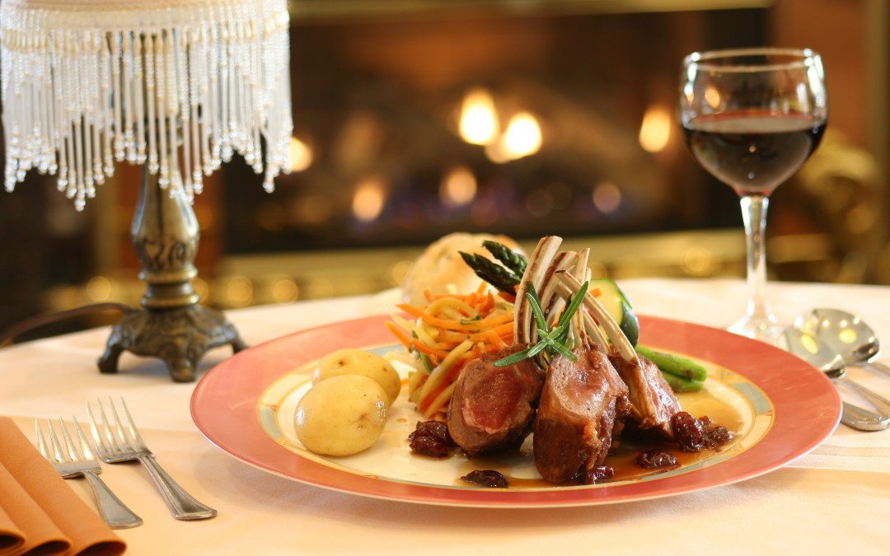
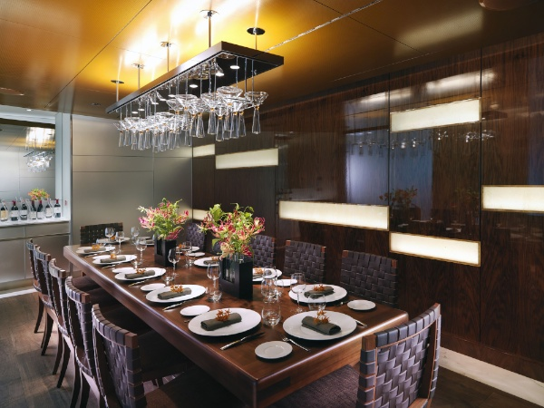
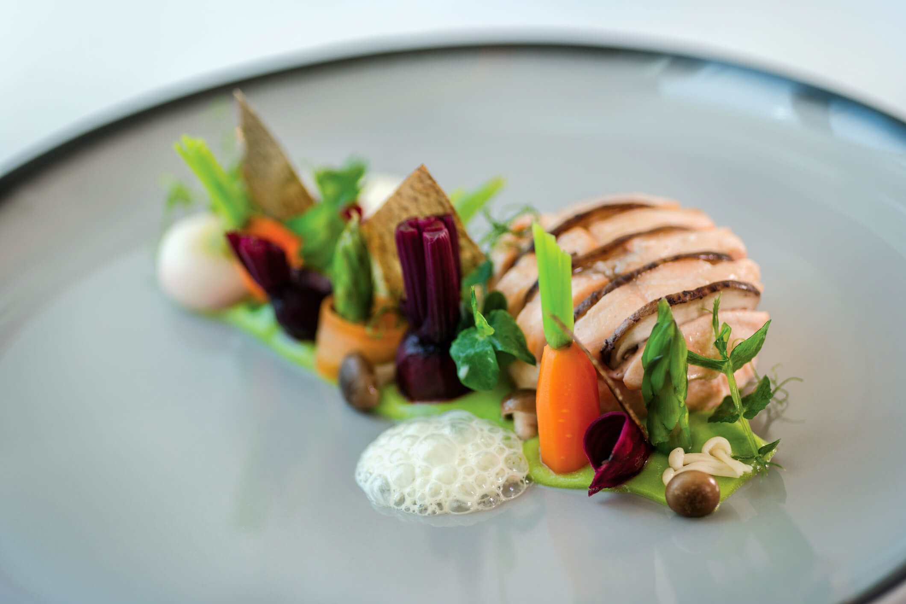
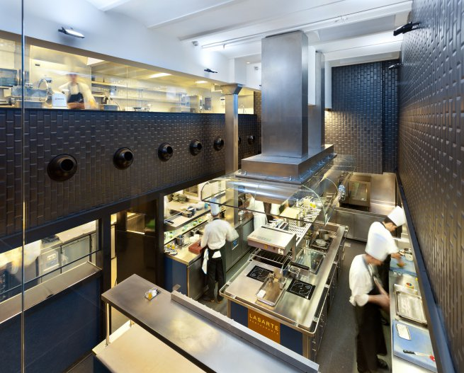
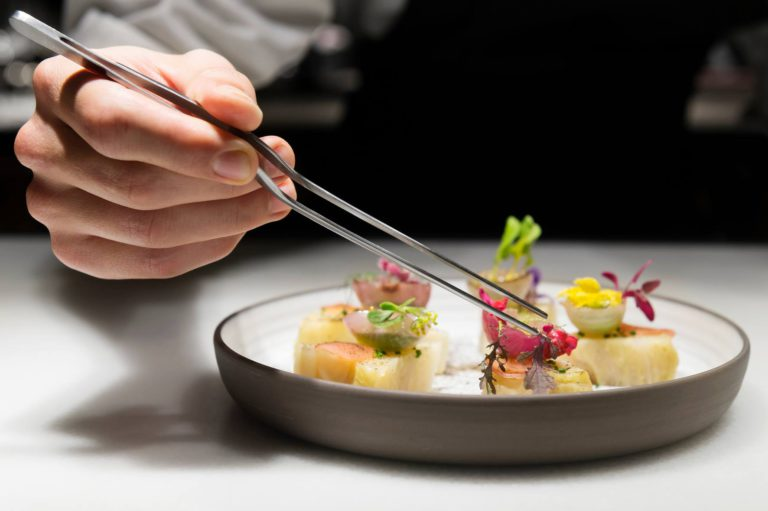
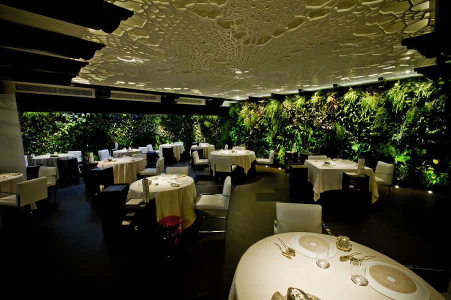
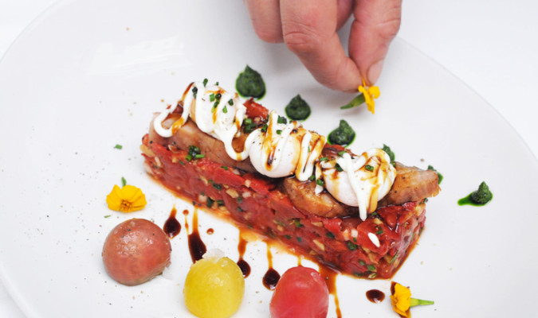

Karla House es un restaurante al más puro estilo internacional, situado en pleno centro de Madrid, junto al Parque del Retiro. En Karla House podrás disfrutar las recetas más cuidadas elaboradas con los productos más selectos; desde ibéricos de bellota, a carnes rojas, pescaíto frito, salmorejo cordobés, flamenquines, pescados frescos del día o nuestra famosa tortilla de patatas. En Karla House sabemos que para redondear una comida el vino es muy importante, por eso nuestra carta de vinos tiene denominaciones de todo el país.
En medio de un clima típicamente madrileño, puedes disfrutar de distintos ambientes. Nuestros espacios lo componen un salón interior decorado a la andaluza con un ambiente más relajado, así como una amplia zona de barra, donde probar toda nuestra carta en mesas o barriles. Y, por supuesto, nuestra terraza, climatizada y abierta durante todo el año.
En Karla House ponemos a su disposición nuestra cocina de manera ininterrumpida y un servicio de aparcamiento gratuito situado a escasos 50 metros, en la calle Serrano.
La carta de Karla House aúna sencillez y tradición. Gracias a nuestros productos de primera calidad, se puede degustar una amplia variedad de platos tradicionales andalucecs así como de todas las regiones de el país, siempre acompañados de la mejor selección de vinos.
Ponemos a disposición de nuestros clientes menús especiales, adaptándolos a las necesidades de cada uno. Comidas de empresa, cumpleaños, reuniones familiares… Disponemos, además, de platos sin gluten.
|  |  |  |  |
|  |  |  |